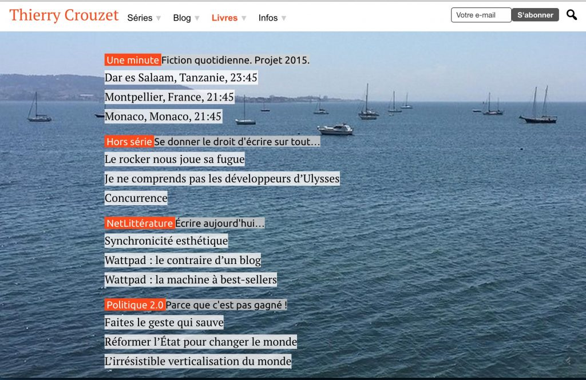

Françoisboniser la une d’un blog
Pour un blog littéraire, un blog d’auteur, un blog de créateur, il existe pour la page d’accueil au moins quatre possibilités (quatre métaphores comme je l’explique dans La mécanique du texte).
- La métaphore de la presse avec des articles en évidence, des
photos, toute une mise en scène antinomique avec mon univers
esthétique.
- La métaphore du blog, soit un rouleau qui affiche l’intégralité
des derniers articles publiés, avec pour avantage de tout de suite
immerger le lecteur dans une œuvre (mais avec pour désavantage de
mêler différentes lignes narratives sans rapport).
- La métaphore du livre, avec la première page devenant une sorte
de couverture comme sur le superbe Professional Web Typography,
mais ça ne marche pas en cas de multiples lignes
narratives.
- La métaphore du CV, du sommaire ou du guide de lecture, qui a
pour but de faire comprendre en une page « C’est qui
celui-là » et « À quoi il travaille ». C’est
le choix de François Bon
depuis longtemps.
Ce choix m’apparaît de plus en plus judicieux pour deux raisons.
- Plus personne ne visite par hasard les pages d’accueil
(j’explique aussi pourquoi dans La mécanique
du texte). La lecture commence directement sur les
articles à partir des recommandations sociales, voire des
abonnements RSS ou autres.
- Quand on va sur la page d’accueil, c’est pour en savoir plus
sur l’auteur, approfondir son œuvre, autant alors avoir une vision
synthétique de son travail.
Je viens de me ranger à ce choix, tout en continuant à tendre vers le minimalisme. Ma seule fantaisie, ma dernière photo Instagram en arrière-plan de la une. Le reste est dans les menus déroulants, ou dans la liste réarrangée automatiquement en fonction de mes dernières publications.

Une minimaliste